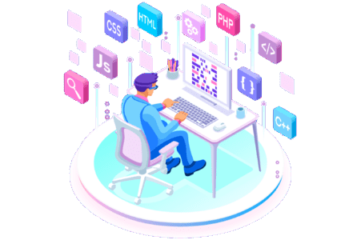
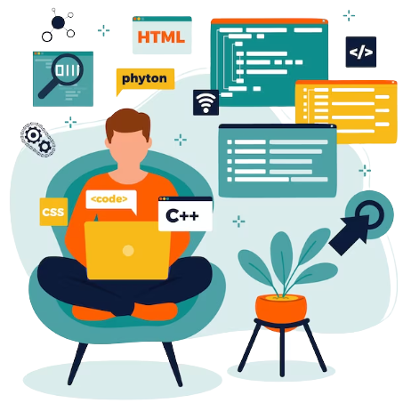
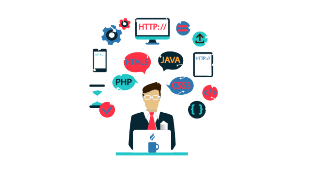

Front-end
Profissionais de Front End desempenham o papel crucial de transformar conceitos de design em interfaces interativas por meio de codificação. Usando linguagens-chave da Web, como HTML, CSS e JavaScript, eles estruturam páginas, estilizam elementos e adicionam funcionalidades. Sua expertise assegura uma experiência de usuário atraente e responsiva em sites e aplicativos. Além disso, eles colaboram frequentemente com designers e desenvolvedores de Back End para garantir a harmonia entre a aparência e o desempenho do produto final. Habilidades em design responsivo e acessibilidade são essenciais para criar interfaces adaptáveis e inclusivas. Em resumo, profissionais de Front End são os arquitetos visuais da Web, combinando criatividade e habilidades técnicas para criar experiências digitais memoráveis.

Backend
As linguagens de programação Backend atuam nos bastidores das funcionalidades das aplicações web. Elas são responsáveis por criar o código que estabelece a ligação entre a internet e o banco de dados, além de gerenciar as interações dos usuários e fornecer suporte à aplicação web. Essa camada do desenvolvimento concentra-se na lógica e na estrutura que permitem que os recursos do sistema funcionem sem problemas. Os programadores de Backend trabalham para garantir a segurança dos dados, a eficiência das operações e a escalabilidade da aplicação à medida que o número de usuários cresce. Em colaboração com os desenvolvedores de Front End, eles formam uma equipe fundamental na criação de experiências online completas e robustas.

Fullstack
Um desenvolvedor full-stack é habilidoso tanto na criação visual e na interação do usuário em um site ou aplicativo (Frontend) quanto na gestão de armazenamento e processamento de dados no servidor (Backend). Essa abordagem abrangente permite que eles construam produtos digitais completos, desde a interface amigável até as funcionalidades complexas nos bastidores. Com proficiência em linguagens como HTML, CSS e JavaScript, eles moldam a experiência do usuário de forma envolvente. Além disso, sua compreensão de linguagens de servidor, bancos de dados e estruturas de back-end lhes permite implementar sistemas eficientes que lidam com a coleta, armazenamento e recuperação de informações de maneira segura. Essa capacidade de trabalhar em ambas as camadas do desenvolvimento os torna recursos valiosos na criação de soluções tecnológicas completas e integradas.

 Aprenda a criar interfaces visuais incríveis usando HTML para estrutura, CSS para design
e JavaScript para interatividade. Explore bibliotecas como React e técnicas de design responsivo para tornar
suas criações adaptáveis em todos os dispositivos.
Aprenda a criar interfaces visuais incríveis usando HTML para estrutura, CSS para design
e JavaScript para interatividade. Explore bibliotecas como React e técnicas de design responsivo para tornar
suas criações adaptáveis em todos os dispositivos.
 Dominar linguagens como Python ou Node.js para construir a lógica por trás de
aplicativos. Crie bancos de dados, APIs e fortaleça a segurança para garantir o funcionamento eficiente e
protegido dos sistemas.
Dominar linguagens como Python ou Node.js para construir a lógica por trás de
aplicativos. Crie bancos de dados, APIs e fortaleça a segurança para garantir o funcionamento eficiente e
protegido dos sistemas.